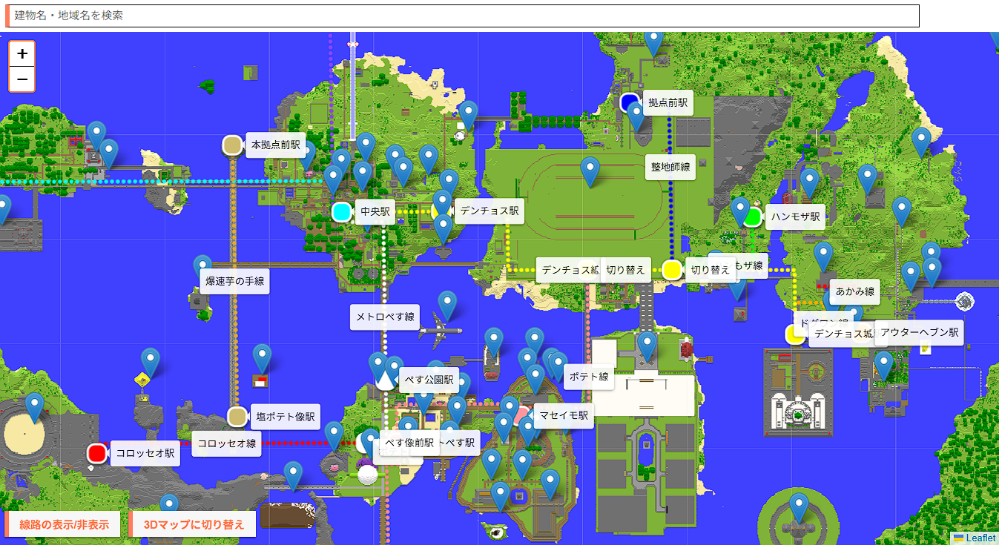
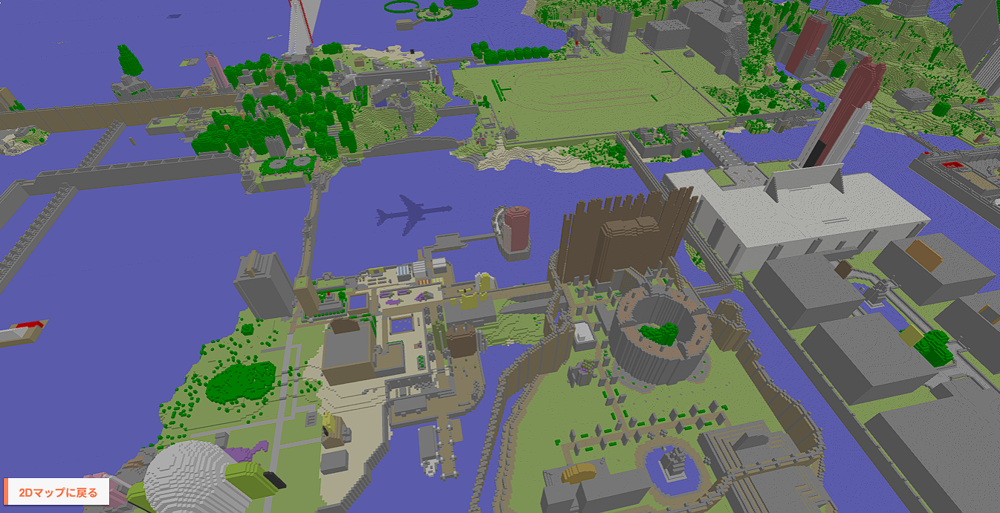

すしすきーマイクラサーバー
各種リンク
マップページ GitHub (Webマップ) GitHub (インフラ・サーバ構築)概要・背景
元々は1ユーザーとして参加していた「すしすきーMinecraftサーバー」ですが、後に運営メンバーとして参加することになり、ワールドデータの直接取得が可能になったため、観光案内に活用できるWebマップの開発を進めました。
さらに、他の管理者とチームDevOpsを組み、障害時の復旧作業、リリース予定のJava版Minecraftサーバーの開発補助やインフラ整備なども行っています。
マップ開発のバージョン履歴と工夫点
段階的に機能拡張と改良を行ってきました。

Ver 1.0 〜 1.3
最初はゲーム内の地図のスクリーンショットを直接撮影し、Leafletで読み込む簡易的なものでした。
その後、画像を256x256にリサイズしてズレ防止や読み込み速度の向上を図り、マーカーや線路配置の関数化を行いました。
Ver 2.0
検索機能を追加し、任意のマーカーを検索できるようにしました。また、データを辞書のリストとしてまとめることで、データと処理を分離させ、保守性を高めました。
Ver 3.0 (大幅刷新)
マップデータの生成方法を大きく改修し、ワールドデータ(LevelDB)からPythonプログラムを用いて直接マップ画像を生成する仕組みを開発しました。
Minecraft公式Wikiを参考にブロック名からマップカラーIDへ変換し、北側のブロックとの高低差から陰影を計算することで、ゲーム内のマップを忠実に再現しています。

同時に高さ情報も保存し、高さマップによる3D表示機能を追加しました。
さらに、マーカー・線路データを外部のJSONファイルとして定義し、座標情報もゲーム内座標で指定できるようにしたことで、データとコードの完全な分離を実現しました。
サーバーインフラ・DevOpsによる運用
k3s / Ansible / Terraform を使用したサーバー構築の自動化を導入し、偶発的な障害であれば自動回復が可能な構成になっています。
過去の対応実績として、設定情報の競合によるクラッシュループの修正、サーバー構成の変更に伴うIP競合でのログインエラー調査、MOD導入テストとその結果に基づく構成変更の提案などを実際に行い、安定運用に貢献しています。